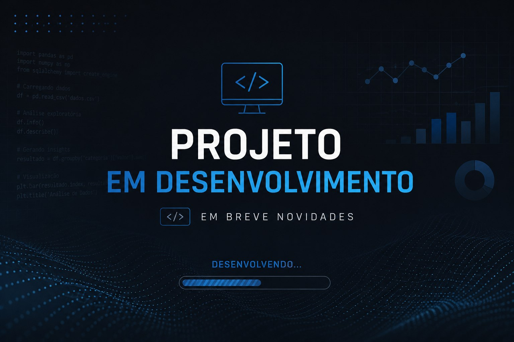

Bacharelado em Engenharia de Software
Formação sólida em desenvolvimento de software, arquitetura de sistemas, algoritmos e boas práticas de engenharia.
Em andamento
Analista de Dados Júnior
Profissional em transição de carreira para Analista de Dados, com experiência sólida no setor de indústria e alimentos — uma trajetória que trouxe visão estratégica e analítica orientada a processos, qualidade e decisões baseadas em evidências e indicadores de desempenho.
Experiência com Power BI para criação de dashboards e relatórios, análise de dados e automação de processos, com capacidade de transformar grandes volumes de dados em insights claros.
Conhecimento em SQL para extração, manipulação e análise de dados em bancos relacionais, além de familiaridade com Python e bibliotecas como Pandas e NumPy para tratamento, limpeza e exploração de dados.
Apontador de Produção — Jul/2025 — atual (1 ano e 1 mês)
Auxiliar de Produção — Jan/2024 — Jul/2025 (1 ano e 7 meses)
Atuação no acompanhamento de processos produtivos, com foco em qualidade, controle de indicadores de desempenho e apoio à tomada de decisão baseada em dados — base prática que sustenta a transição para uma atuação analítica.
Apoio em processos administrativos de admissão, demissão e controle de documentos trabalhistas. Cálculo de férias e rescisões, controle de ponto eletrônico e emissão de holerites. Administração de benefícios e atendimento a colaboradores, além de apoio no cumprimento de obrigações acessórias, incluindo envio de informações ao eSocial.
Minha jornada de aprendizado e desenvolvimento contínuo.
Formação sólida em desenvolvimento de software, arquitetura de sistemas, algoritmos e boas práticas de engenharia.
Estudos focados em análise de dados, estatística, machine learning, visualização e tomada de decisão baseada em dados.
Formação prática em análise de dados, SQL, Power BI, Python, estatística aplicada e soluções com IA.
Projetos práticos de análise de dados estão a caminho — em breve, novidades por aqui.

Novo projeto de análise de dados em construção. Em breve, detalhes completos por aqui.
Em breveNovo projeto de análise de dados em construção. Em breve, detalhes completos por aqui.
Em breveNovo projeto de análise de dados em construção. Em breve, detalhes completos por aqui.
Em breveCursos e certificações complementares em análise de dados, BI e IA aplicada.
Aberto a oportunidades como Analista de Dados Júnior. Mande uma mensagem pelo LinkedIn!
Respondo em até 24 horas.